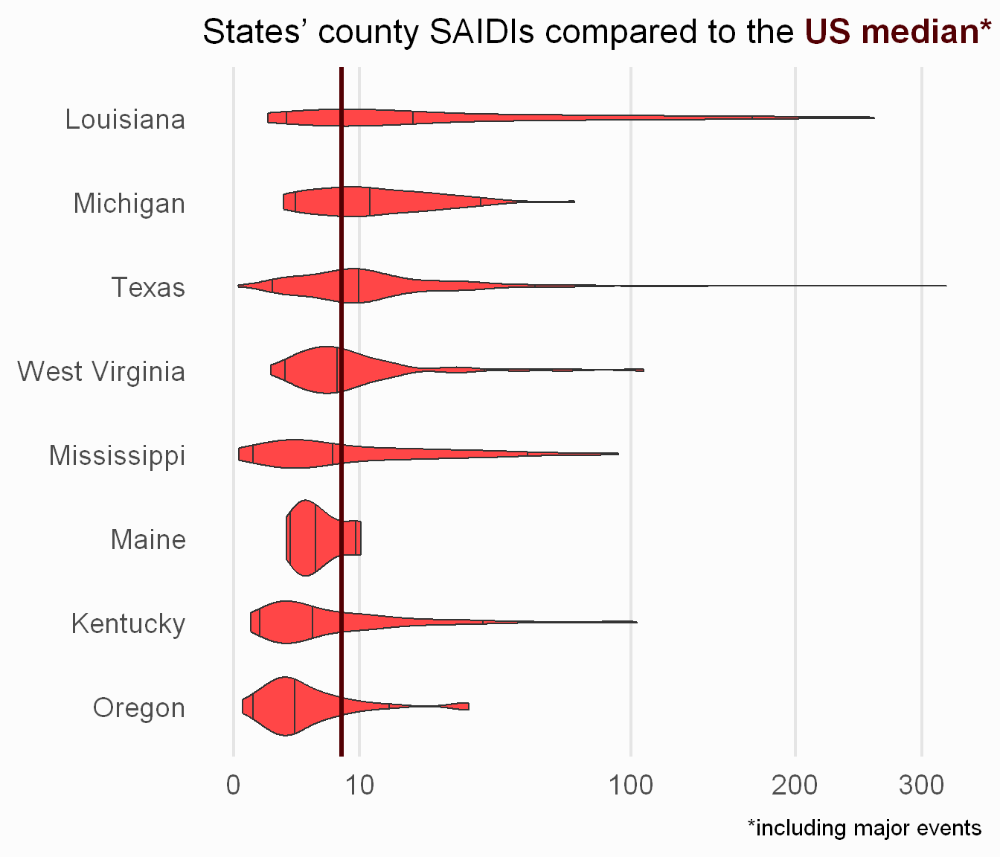

This post is the third in a series exploring the DOE’s Eagle-I dataset on US electrical grid outages. See previous posts here: I and II
I gave away in my previous post that I had drafted numbers to compare with the EIA for a few states.
.
They did not match the EIA chart (see below), but were reasonable enough for me to justify making more-polished visualizations. In more words, “reasonable” given just the uncertainties in data sourcing I already know about, let alone the Rumsfeldian unknowns lurking about. Before testing my hubris hypothesis that I’ve replicated anything worth posting about…
A few caveats:
I am comparing numbers with the set from the EIA that includes major events, to avoid coming up with independent estimates of when these events occurred in the Eagle-I data, merging that data in somehow, etc.
I am comparing numbers with numbers I am reading off of the EIA chart, rather than coming up with my own aggregated state numbers from their underlying utility-level spreadsheet. That is an exercise for another day
I did not run the Eagle-I analysis on all 50 states, because I’m impatient to save computation time. I ran only the 8 states labeled in the EIA chart: Kentucky, Louisiana, Maine, Michigan, Mississippi, Oregon, Texas, West Virginia.
Last bit before jumping into the charts… my setup chunk, where I load packages, set my ggplot2 theme, and assemble the necessary targets (i.e. datasets I produced in my pipeline). For colors, I’m using reds from Reasonable Colors today.
I managed to create a chart that looks like what I was after! Recall the chart we started with, from this EIA article. The two metrics I’m interested in replicating from the chart are System Average Interruption Duration Index (SAIDI, horiz. axis) and System Average Interruption Frequency Index (SAIFI, vert. axis).
What’s below is only a draft, for reasons I’ll get into with the remainder of this post.
Code
inner_join( state_saidi, state_saifi,by ="state") %>%bind_rows(data.frame(state ="US median*",# Technically, they say "just over seven hours" so I added 5% to SAIDI.# SAIFI is interpreted from graphsaidi =7*1.05,saifi =1.4 ) ) %>%mutate(state =fct_reorder(state, saidi) ) %>%ggplot(aes(x = saidi,y = saifi)) +geom_point(aes(color = state =="US median*"),size =rel(4),alpha =1/1.5) +geom_text_repel(aes(color = state =="US median*",label = state)) +scale_color_manual(values =c(base_red, median_red)) +expand_limits(x =0,y =0) +labs(title =paste("States' SAIDIs & SAIFIs compared to the", median_tag), caption ="*including major events") +guides(color ="none") +theme(panel.grid.major =element_line("grey90"),axis.title =element_blank(),title =element_markdown(size =rel(0.8)))
Total annual outages
I will start off comparing my SAIDI with the EIA’s median value of “just over seven hours”, translated by yours truly to 7.35 (or 5% higher). Louisiana catches the eye, being so far out at 50+ hours. But that’s not as far adrift as it is in the EIA data, at 80+ hours. Maine has the lowest SAIDI in my analysis and the EIA’s (you go Maine!). Most states in my analysis are above the EIA median, as I expected. But on closer inspection, it’s by smaller margins than I want to see before closing out this analysis. Kentucky is above-median according to the EIA and below-median if you look at my analysis.
Code
state_saidi %>%bind_rows(data.frame(state = median_tag,# Technically, they say "just over seven hours"# so I added 5%saidi =7*1.05 ) ) %>%mutate(state =fct_reorder(state, saidi) ) %>%ggplot(aes(x = saidi,y = state)) +geom_col(aes(fill = state == median_tag)) +scale_fill_manual(values =c(base_red, median_red)) +labs(caption ="*including major events") +guides(fill ="none") +theme(panel.grid.major.x =element_line("grey90"),axis.text.y =element_markdown(),axis.title =element_blank())
I will need to take another look at my approach to calculating SAIDI, and have a sneaking suspicion I need to handle missing chunks of the time-series better.
I should also check how the distribution of SAIDIs in individual counties held up, to better understand how I’m calculating right-tail outcomes especially. Right on time, a wild violin chart appears! The lines in each violin indicate the median SAIDI among a state’s counties, as well as the 5th / 95th SAIDI percentiles.
Shoutout to the ggtext package for making it easy to experiment with color-tagging my title!
 This helps my self-esteem a little bit. Maybe I have moderately, but not egregiously, underestimated the largest and/or longest outages? Still, look out for revisions to the SAIDI calculations in a future post!
Number of outages
Showing the same charts, but now with SAIFI rather than SAIDI. Other than Louisiana coming in above the EIA estimate, I can summarize everything else as worse than my SAIDI analysis in replicating the EIA estimates. The SAIFI values I came up with are lower than the EIA’s state-level estimates. Most notable are the many state SAIFI estimates that come in lower than the EIA median… a clearer sign that more work is needed here.
Next steps
Setting aside whether or how much I can mitigate uncertainty due to using census population figures (and not utility customer figures), I feel confident there is room to tighten up my SAIDI and SAIFI calculations with a closer review of them. Along the way, I plan to develop additional charts to quantify the discrepancies I find.
Ideally, I would also show the above charts alongside the actual EIA values for each state / county, and not just the overall median value as derived from visually interpreting their published chart. It’s not exactly a sturdy foundation for comparative analysis…
Firming this up will require reading in & manipulating data the EIA publishes on utility reliability (in spreadsheets named “Reliability.xlsx” for each calendar year). From a quick glance, the reliability files allow for taking a weighted average SAIDI / SAIFI for each state, using the “Number of Customers” column as the weight. Stay tuned for this update as well!
To cap things off, I would like to conjure up interactive visualizations of my Eagle-I analysis (and comparisons to the EIA figures), maybe with the ggiraph package.
![]()